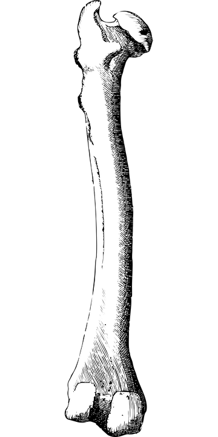

<footer>
    
</footer>


<button><a href="index.html">Volta</a></button>

<style>
    img {
  border: 16px solid #ffffff; /* Light grey */
  border-top: 16px solid #ffffff; /* Blue */
  border-radius: 50%;
  width: 280px;
  height: 280px;
  animation: spin 2s linear infinite;
}

@keyframes spin {
  0% { transform: rotate(0deg); }
  100% { transform: rotate(360deg); }
}
</style>